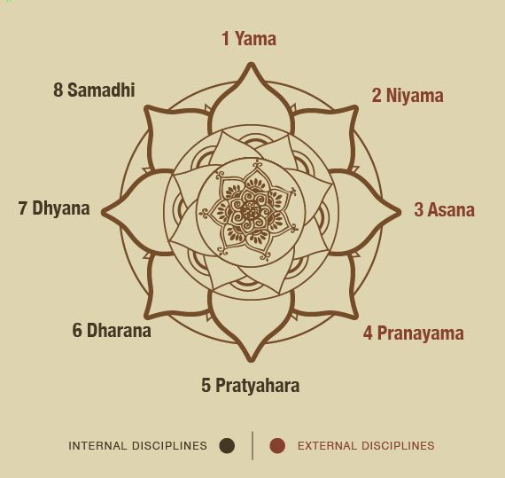

In this you learn about yoga, importance of yoga, different types of Asana,
its procedure, benefits and contraindication.
" Through constant practice of yoga, one can overcome all difficulties and eradicate all weaknesses. Pain can be transmitted into bless, sorrow into joy, failure into success and sickness into perfect health. Determination, patience, persistence lead us towards our goal ".
Pranayama is considered as the science of breath because the body gets energy respiratory system. The other systems of the body are also directly related with Prana. Pranayama thus refers to extension of breath and its control. The humans absorb Prana(Breath) through fresh air in three ways.
Normal Breathing: In this kind, humans absorb normal quantity of Prana.
Deep Breathing: The amount of prana is more absorbed.
Yogic Breathing: Large amount of prana is absorbed and stored in the body which can be used in case of emergencies like diseases.
Meditation is a practice where an individual uses a technique – such as mindfulness, or focusing the mind on a particular object, thought, or activity – to train attention and awareness, and achieve a mentally clear and emotionally calm and stable state.
